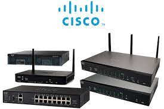
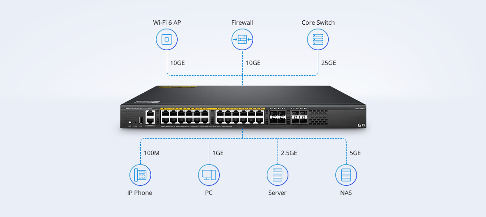

Básicamente el router es un dispositivo dedicado a la tarea de administrar el tráfico de información
que circula por una red de computadoras. Existen dispositivos específicamente diseñados para la
función de router, sin embargo, una computadora común puede ser transformada en un router, tan
sólo con un poco de trabajo, conocimiento y paciencia.
En la actualidad, un router puede ser usado para compartir internet, a través de cable, ADSL o WiFi
con otras computadoras, proveer protección de firewall, controlar la calidad del servicio y otras
varias tareas, principalmente en el ámbito de la seguridad.
Un router Wireless o WiFi nos provee acceso a la red local y a internet de forma
inalámbrica a cualquier dispositivo, ya sea notebook, tablet, impresoras, discos de almacenamiento
o smartphones que esté dentro del alcance de la señal.

Configuracion Basica
Router# configure terminal
Enter configuration commands, one per line. End with CNTL/Z.
Router(config)# hostname R1
R1(config)# enable secret class
R1(config)# line console 0
R1(config-line)# password cisco
R1(config-line)# login
R1(config-line)# exit
R1(config)# line vty 0 4
R1(config-line)# password cisco
R1(config-line)# login
R1(config-line)# exit
R1(config)# service password-encryption
R1(config)# exit
R1# copy running-config startup-config
Destination filename [startup-config]?
Building configuration...
[OK]
R1# config t
R1(config)# interface fa0/0/0
R1(config-if)# ip address 192.168.10.1 255.255.255.0
R1(config-if)# no shutdown
R1(config-if)# exit
R1(config)# interface fa0/0/1
R1(config-if)# ip address 192.168.11.1 255.255.255.0
R1(config-if)# no shutdown
R1(config-if)# exit
R1(config)# interface s0/0/0
R1(config-if)# ip address 209.165.200.225 255.255.255.252
R1(config-if)# no shutdown
R1(config-if)# exit
R1(config)#
Switch
Un switch o conmutador es un dispositivo de interconexión utilizado para conectar equipos en red
formando lo que se conoce como una red de área local (LAN) y cuyas especificaciones técnicas
siguen el estándar conocido como Ethernet (o técnicamente IEEE 802.3)
En realidad, los switches no son los únicos elementos encargados de la interconexión de
dispositivos en una red local. Los switches realizan esta función para medios cableados. Cuando la
interconexión se realiza de forma inalámbrica el dispositivo encargado de ello se denomina Punto
de acceso inalámbrico.
El switch es posiblemente uno de los dispositivos con un nivel de escalabilidad más alto. Existen
switches de cuatro puertos con funciones básicas para cubrir pequeñas necesidades de
interconexión. Pero también podemos encontrar switches con cientos de puertos y con unas
prestaciones y características muy avanzadas.

Acces Point
Los AP o WAP (Access point o Wireless Access point) También conocidos como puntos de
acceso. Son dispositivos para establecer una conexión inalámbrica entre equipos y pueden formar
una red inalámbrica externa (local o internet) con la que interconectar dispositivos móviles o
tarjetas de red inalámbricas. Esta red inalámbrica se llama WLAN (Wireless local área network) y
se usan para reducir las conexiones cableadas.
Servidor
El término servidor tiene dos significados en el ámbito informático. El primero hace referencia al
ordenador que pone recursos a disposición a través de una red, y el segundo se refiere al
programa que funciona en dicho ordenador. En consecuencia, aparecen dos definiciones de
servidor:
Definición Servidor (hardware): un servidor basado en hardware es una máquina física
integrada en una red informática en la que, además del sistema operativo, funcionan uno o
varios servidores basados en software. Una denominación alternativa para un servidor
basado en hardware es "host" (término inglés para "anfitrión"). En principio, todo ordenador
puede usarse como "host" con el correspondiente software para servidores.
Definición Servidor (software): un servidor basado en software es un programa que ofrece
un servicio especial que otros programas denominados clientes (clients) pueden usar a nivel
local o a través de una red. El tipo de servicio depende del tipo de software del servidor. La
base de la comunicación es el modelo cliente-servidor y, en lo que concierne al intercambio
de datos, entran en acción los protocolos de transmisión específicos del servicio.